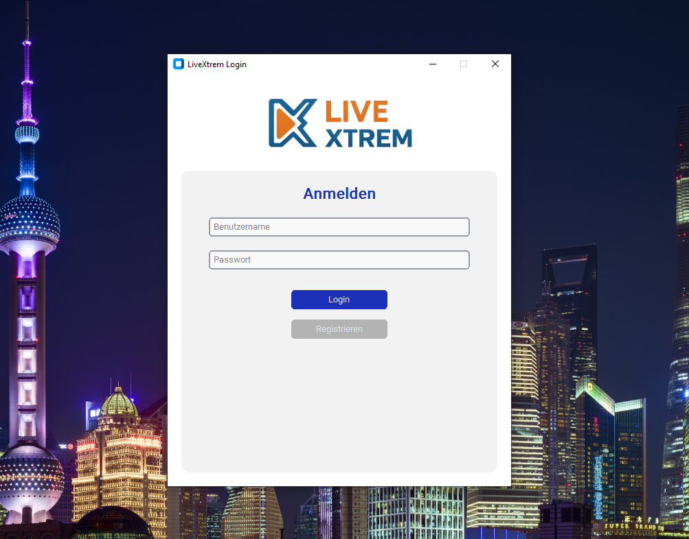
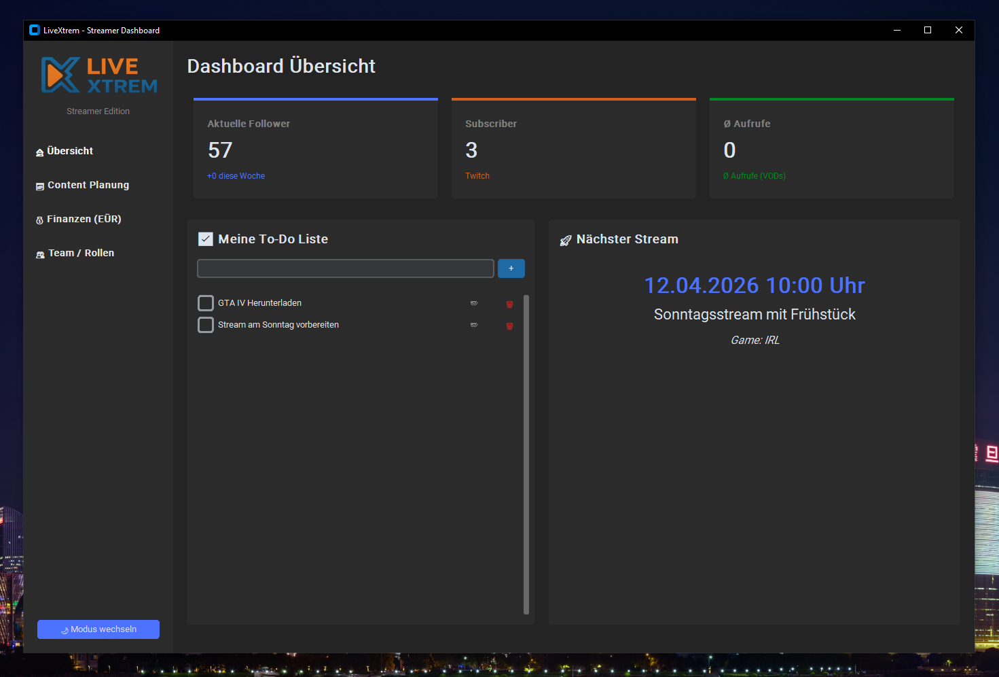
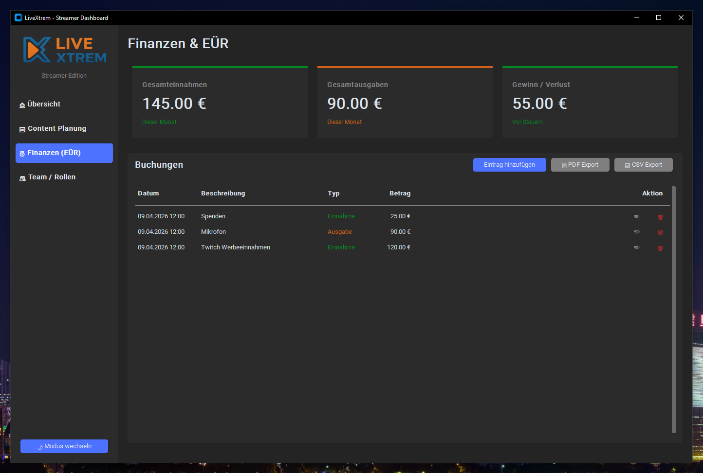
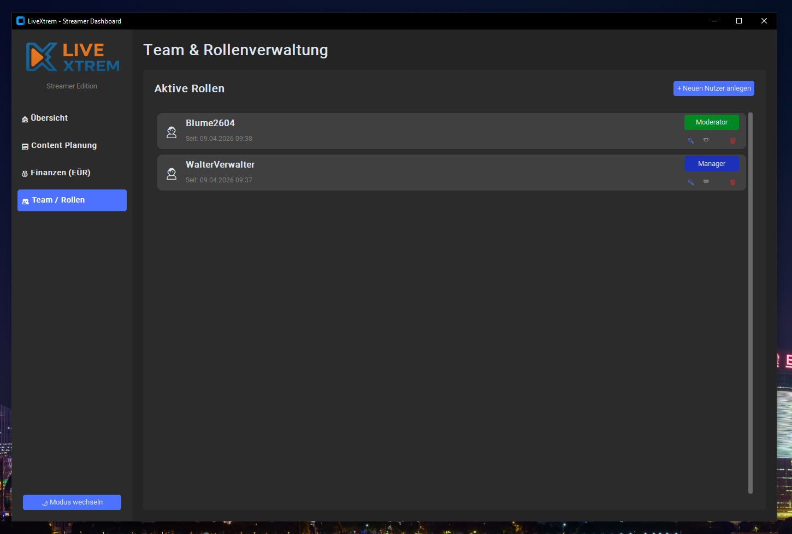
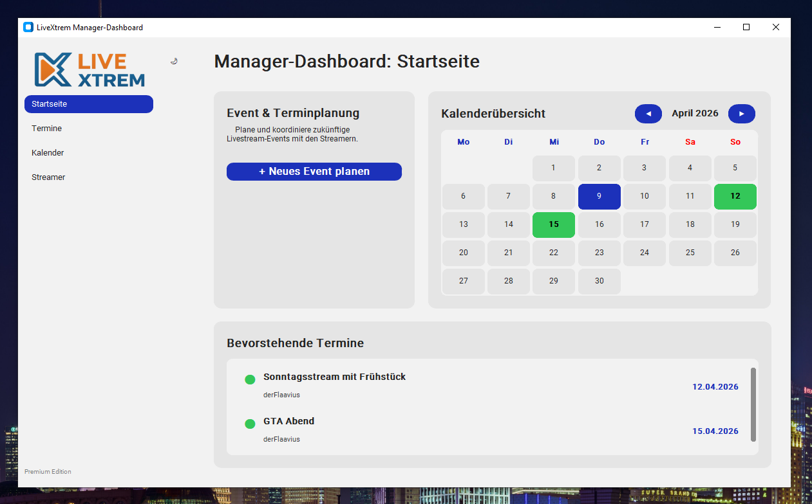
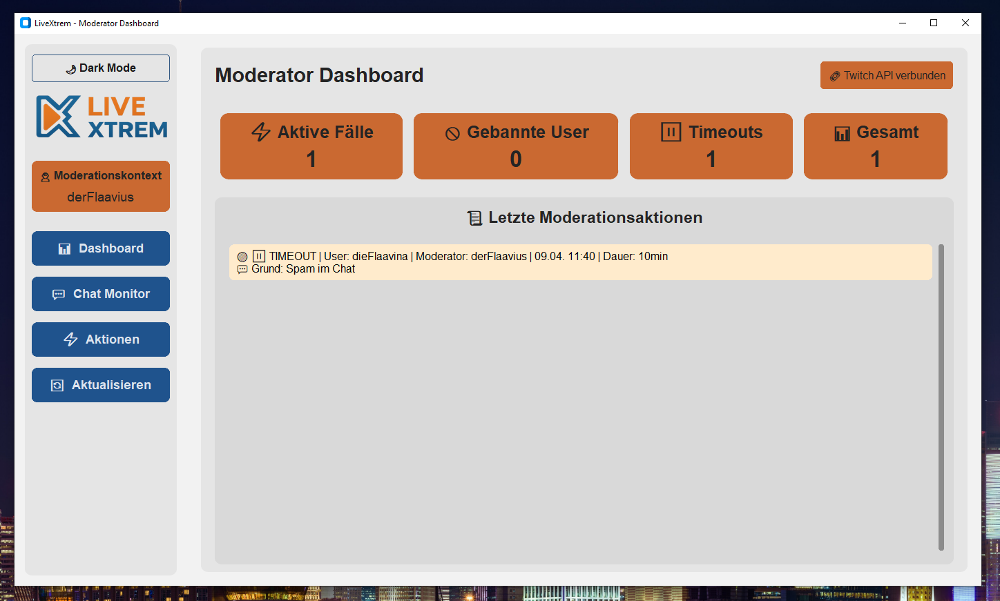
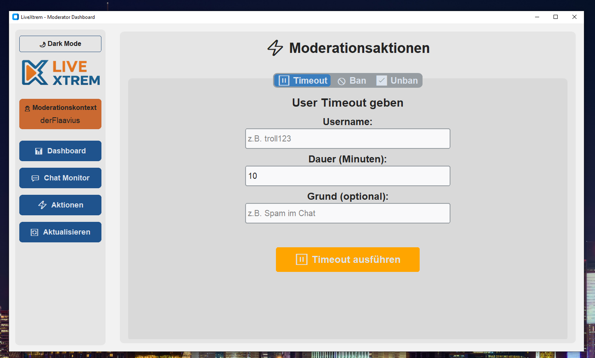

User Guide
Praktische Nutzung aus Sicht von Streamer, Moderation und Management mit typischen Abläufen im Arbeitsalltag.
Ziel dieses Handbuchs
Dieser Abschnitt beschreibt die Nutzung aus Sicht der Anwender. Ziel ist nicht nur eine Auflistung einzelner Menüpunkte, sondern ein nachvollziehbarer Überblick über typische Arbeitsabläufe. Nach dem Lesen soll klar sein, welche Rolle welche Aufgaben übernimmt und wie liveXtrem im Alltag eingesetzt wird.
1. Anmeldung und Einstieg
Nach dem Start erscheint das Login-Fenster. Nutzer mit bestehenden Zugangsdaten melden sich dort direkt an. Für neue Nutzer steht eine Registrierung zur Verfügung, die einen Streamer-Account anlegt. Moderatoren und Manager registrieren sich nicht selbst, sondern erhalten ihre Zugangsdaten vom zugeordneten Streamer. Nach erfolgreicher Anmeldung öffnet liveXtrem automatisch das Dashboard, das zur jeweiligen Rolle gehört. Jede Rolle arbeitet dabei in ihrer eigenen Oberfläche.
Bei der Registrierung werden Benutzername, E-Mail und Passwort erfasst und anschließend die Verbindung zu Twitch hergestellt. Nach dem ersten Anlegen ist der neue Benutzer immer zunächst als Streamer eingerichtet. Beim Anmelden öffnet sich für Streamer und Moderatoren zusätzlich ein Browsertab für den Twitch-Login. Erst nach erfolgreicher Autorisierung erfolgt die Weiterleitung in das passende Dashboard. Wird der Twitch-Login abgebrochen, bleibt die Weiterleitung aus und die Anmeldung muss erneut gestartet werden. Manager werden nach der Anmeldung direkt in ihr Dashboard geführt.

2. Arbeiten im Streamer-Dashboard
Das Streamer-Dashboard ist der zentrale Arbeitsbereich für die operative Kanalorganisation. Hier werden Planung, Aufgaben und wirtschaftliche Grunddaten an einer Stelle zusammengeführt.

To-do-Verwaltung
Aufgaben lassen sich direkt im Dashboard anlegen, priorisieren und nachverfolgen. Typische Anwendungsfälle sind Streamvorbereitung, Abstimmungen mit Partnern, technische Nacharbeiten oder offene Community-Themen. Dadurch bleibt der Arbeitsstand im Projektkontext sichtbar und wandert nicht in verstreute Notizen ab. Um eine Aufgabe zu erfassen, wird sie im Eingabefeld als kurzer Text eingetragen und über die Plus-Schaltfläche gespeichert. Bereits vorhandene Einträge lassen sich per Kontrollkästchen abhaken sowie über die Aktionssymbole bearbeiten oder löschen.
Übersicht des nächsten Streams
Ein eigener Bereich hebt den nächsten geplanten Stream hervor. Das erleichtert die kurzfristige Orientierung, wenn mehrere Inhalte parallel vorbereitet werden und schnell erkennbar sein soll, welcher Termin als Nächstes relevant ist. Damit dort ein Termin erscheint, muss zuvor in der Streamplanung mindestens ein zukünftiger Stream gespeichert werden. Die Anzeige aktualisiert sich anhand der hinterlegten Planungsdaten automatisch auf den chronologisch nächsten Termin.
Geplante Streams
Über die Planungsfunktion lassen sich Streamtermine anlegen, anpassen und bei Bedarf archivieren. Die angelegten Streams können auch Manager eines Streamers einsehen und verwalten. Zum Anlegen eines neuen Streams wird die Schaltfläche „Neuen Stream planen“ geöffnet. Dort werden Titel, Spiel oder Kategorie sowie Datum und Uhrzeit eingetragen und gespeichert. Bestehende Planungen lassen sich aus der Liste heraus zur Bearbeitung öffnen und bei Bedarf nach Bestätigung wieder entfernen.
Finanzverwaltung
Einnahmen und Ausgaben werden direkt im Dashboard erfasst und tabellarisch ausgewertet. Für die Weiterverarbeitung stehen Exporte nach PDF und CSV bereit. Das unterstützt sowohl den schnellen Überblick im Alltag als auch die spätere Dokumentation und einfache betriebswirtschaftliche Auswertung. Um eine Buchung zu erfassen, wird über „Eintrag hinzufügen“ ein Formular geöffnet, in dem Beschreibung, Betrag, Typ und Datum eingetragen werden. Vorhandene Einträge können aus der Liste bearbeitet oder gelöscht werden. Für den Export wird anschließend die gewünschte Ausgabe als PDF oder CSV gewählt.

Team- und Rollenverwaltung
Der Streamer kann Moderatoren und Manager ernennen, verwalten sowie zugehörige Informationen einsehen und pflegen. Der Streamer legt hierfür ein Benutzerkonto für den Moderator oder den Manager an, das direkt mit dem Streamer verknüpft ist und auf dessen Daten zugreift. Um einen neuen Benutzer anzulegen, wird in der Rollenverwaltung „Neuen Nutzer anlegen“ gewählt. Anschließend werden Benutzername, E-Mail, Rolle und Passwort eingetragen und gespeichert. Bestehende Einträge lassen sich in der Übersicht außerdem in ihrer Rolle anpassen, beim Passwort aktualisieren oder vollständig löschen.

3. Arbeiten im Manager-Dashboard
Das Manager-Dashboard konzentriert sich auf organisatorische und koordinierende Aufgaben rund um geplante Inhalte und betreute Streamer-Kontexte.

Event- und Terminplanung
Hier werden Streams und Termine über eine Kalenderansicht verwaltet. Manager können Inhalte planen, Termine anpassen und den Überblick über ihre zugeordneten Streamer behalten. Dabei werden alle Änderungen sowohl vom Moderator als auch vom Streamer synchronisiert. Um einen Termin zu planen, wird in der Kalenderansicht der gewünschte Tag gewählt. Danach werden im Dialog der Event-Titel und der zugeordnete Streamer ausgewählt und gespeichert. Vorhandene Termine können über denselben Ablauf geöffnet und angepasst werden.
Übersicht aller Events
Neben der Kalenderansicht steht eine Listenansicht mit vergangenen und zukünftigen Einträgen zur Verfügung. Diese Sicht ist besonders hilfreich, wenn gezielt nach bestehenden Planungen oder einzelnen Streamern gesucht werden soll.
Verwaltung zugeordneter Streamer
Manager arbeiten nicht global über alle Datensätze, sondern innerhalb ihrer zugewiesenen Zuständigkeiten. Das begrenzt Zugriffe nachvollziehbar und verhindert, dass organisatorische Rollen unkontrolliert auf fremde Kanäle zugreifen.
4. Arbeiten im Moderator-Dashboard

Das Moderator-Dashboard unterstützt Community-Management und konkrete Moderationsaufgaben in einem klar abgegrenzten Arbeitsbereich.
Dashboard und Historie
Zu Beginn werden Kennzahlen und zuletzt ausgeführte Moderationsaktionen angezeigt. Dadurch ist schnell ersichtlich, welche Eingriffe bereits erfolgt sind.
Chat Monitor
Der Chat-Monitor arbeitet mit VOD-basierten Chatdaten. Das ist besonders nützlich, wenn problematische Situationen nachträglich eingeordnet, Gesprächsverläufe geprüft oder Moderationsentscheidungen nachvollzogen werden müssen.
Aktionen: Timeout, Ban und Unban
Moderatoren können Benutzer zeitweise sperren, dauerhaft bannen oder bestehende Sperren wieder aufheben. Die Oberfläche führt diese Aktionen als klare Arbeitsabläufe und macht Moderationsvorgänge damit nachvollziehbar. Für einen Timeout, Ban oder Unban wird im jeweiligen Reiter der Benutzername eingetragen. Beim Timeout werden zusätzlich Dauer und optional ein Grund hinterlegt, beim Ban optional ein Grund. Anschließend wird die Aktion direkt über die passende Schaltfläche ausgeführt. Ein permanenter Bann wird vor dem Absenden zusätzlich bestätigt.

5. Typische Nutzungsszenarien
Szenario A: Ein Streamer plant die kommende Woche
Der Streamer plant zunächst neue Inhalte, prüft den nächsten anstehenden Termin und überführt offene Punkte in die Aufgabenverwaltung. Anschließend können bereits Ausgaben, Kooperationen oder sonstige finanzielle Einträge ergänzt werden. So bleiben organisatorische und kaufmännische Vorbereitung in einem zusammenhängenden Ablauf.
Szenario B: Ein Manager koordiniert mehrere Termine
Der Manager öffnet die Kalenderansicht, plant Termine für zugeordnete Streamer und kontrolliert in der Listenansicht Überschneidungen oder offene Punkte. Planung wird dadurch nicht nur festgehalten, sondern auch laufend überprüfbar und für mehrere Beteiligte nachvollziehbar.
Szenario C: Ein Moderator arbeitet einen Vorfall nach
Der Moderator analysiert über den Chat-Monitor einen auffälligen Verlauf im VOD-Kontext und führt bei Bedarf einen Timeout oder Bann durch. Die Aktion erscheint anschließend in der Historie und bleibt damit für spätere Rückfragen oder weitere Maßnahmen nachvollziehbar.